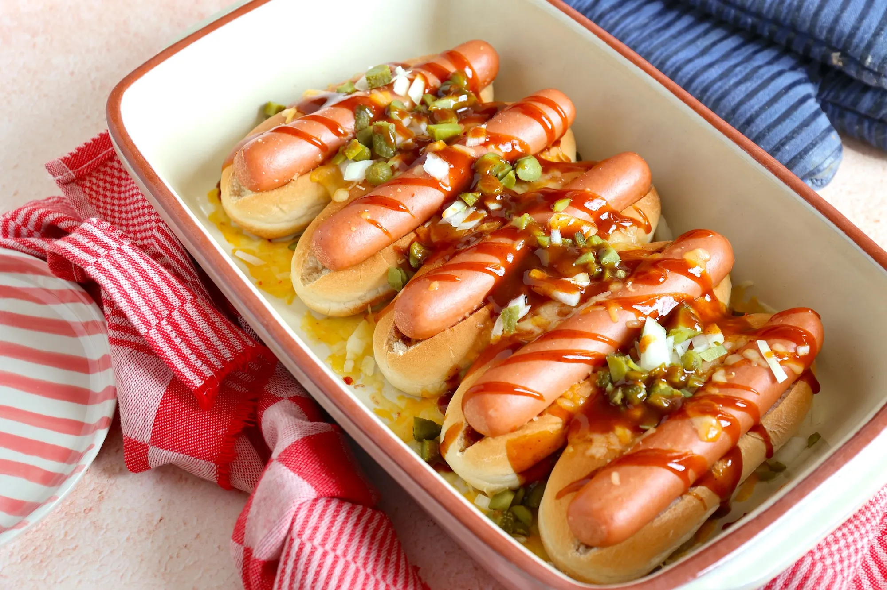

Hotdogs uit de oven

Ingrediënten
- 4 hotdog broodjes
- 4 hotdog worstjes
- 4 el curry bijv Hela Kruiden Ketchup Curry 30% minder suiker
- 1 ui
- Geraspte kaas
- 2 zoetzure augurken
Bereidingen
- Verwarm de oven voor volgens de instructies op de verpakking.
-
Snijd de broodjes open, dwars door het midden, en leg ze op een bakplaat
of in een ovenschaal.
- Besmeer de broodjes met curry.
-
Leg de worstjes op de broodjes en strooi de geraspte kaas er overheen.
- Bak 10 minuten in de oven.
- Snijd de ui en augurken in kleine blokjes.
- Beleg de hotdogs met fijngesneden ui, augurk en wat extra curry.